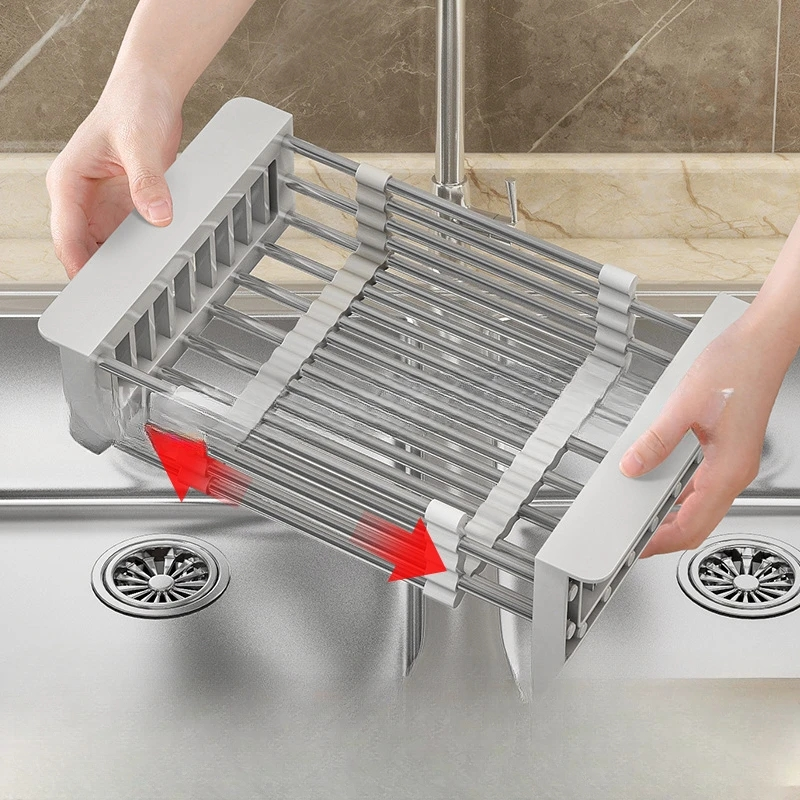

Para tu cocina
Ayuda a mantener secos y limpios los mostradores de la cocina. Su estante ajustable se adapta al fregadero y permite sostener platos, frutas u otros alimentos.
Características
- Medidas: 30 × 25 × 10 cm.
Precio$59.900 COP
Consultar y pedir por WhatsApp
WhatsApp no está configurado. Añade un número en js/config.js para habilitar consultas.